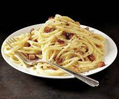

Carbonara

Pinoy Style Carbonara
This recipe is not Italian friendly as it is concucted by
Filipinos and greatly deviates from the original Italian recipe.
Ingredients
- onions
- tuna
- ham
- all purpose cream
- evaporated milk
- ground pepper
- salt
- msg
- grated cheese
- cream of mushroom
Steps
- Saute the chopped onions
- Add the drained tuna
- Add the ham chopped in tiny squares
- Add salt, pepper, and msg
- Lower the heat
- Add the evaporated milk and all purpose cream
- Add pepper and msg
- Add the grated cheese
- Add the cream of mushroom
- Boil for 10 more minutes